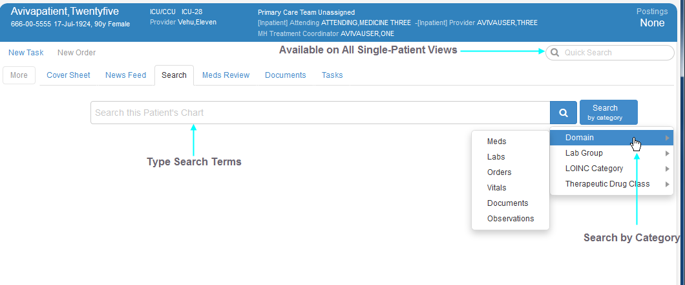

With this plug-in, you can search across the breadth and depth of your patient's entire chart or filter your search based on a particular clinical domain. HMP's Search uses Apache's Solr search server and Lucene search library to provide a number of convenient features, including:

The application's Search plug-in also includes a Quick Search feature, which is available on all single-patient views and offers a limited version of its main search feature. For example, Quick Search does not present suggestions based on the terms you are typing (one of its limitations), nor does it offer easy search-by-category selections (another limitation). It does, however, present categorized results and smart details, enabling you to perform simultaneous searches: For example, you might view laboratory results using the main search feature and the results of a search for medications in the Quick Search feature.
In addition, Search uses National Drug File Reference Terminology (NDF-RT) and Logical Observation Identifier Names and Codes (LOINC) terminologies to enhance its functionality.
As you type your text string into the application's main Search field, the plug-in presents a clickable list of automatic suggestions that can save typing time by helping you complete your query. It also provides labels to let you know in which category each suggestion resides.
Search suggestions reflect information in the application's Apache Solr index rather than information in your patient's record, so clicking a suggestion won't necessarily produce results. It will, however, initiate a search that uses advanced technologies to locate possible matches in both structured and unstructured data throughout your patient's medical record. If results are available, HMP's Search groups them by information category, presents a brief summary, and provides on-click access to more detailed information. The Search plug-in also provides spelling suggestions.
Learn HowSearch works across structured and unstructured patient-data domains—from laboratory results to progress notes and nearly everything between.
The Search plug-in offers a Filter menu that allows you to filter results by date range. Located on the Search view's right side, the filter menu contains the following date ranges:
HMP's Search plug-in also provides category-based searches that return selectable items from the following four categories:
Search automatically organizes and groups results, presenting an alphabetized list of result groups on the left side of the Search view. When you click a group, the application lists the items within it, organized in reverse chronological (newest first) order.
Learn MoreThe Search plug-in displays smart details in the right portion of the view's pane. Smart details are context aware—that is the plug-in knows what kind of result you have selected (text item, lab result, order, and so forth) and displays details that are meaningful for this type of result. For example, if you select a result that is a progress note, the detail display presents the note in its entirety, with highlighting that calls out search terms within it. Results that represent medications, on the other hand, yield smart details that appear on the application's Meds Review tab and include actions that allow you to create new tasks or access relevant clinical knowledge sources
Learn More